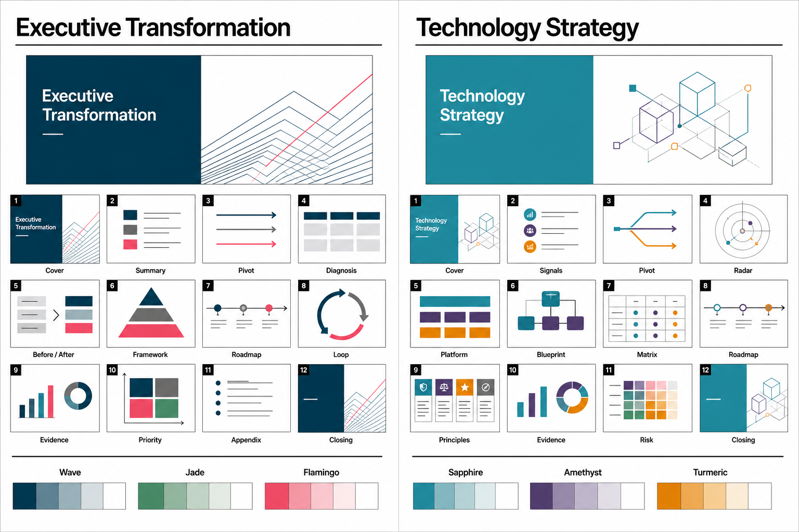

Template gallery
两套 12 页模板形成默认交付基线
经营转型模板与技术战略模板分别覆盖管理机制和技术能力组合，图例展示页面节奏、关键版式和六种推荐配色。

12-page template gallery01
Executive Transformation
经营转型模板用 12 页完成判断、诊断、机制、证据、优先级和行动闭环
默认 Wave，治理主题切 Jade，决策会切 Flamingo。适合高层数智化转型、经营穿透、治理机制和年度重点工作汇报。
Wave 默认
Jade 治理
Flamingo 决策
01
封面判断
给出转型主张
02
核心结论
三条高管判断
03
章节转场
切换讨论边界
04
差距诊断
表象、根因、动作
05
模式转变
当前到目标
06
能力框架
机制与平台承接
07
实施路线
三阶段推进
08
闭环机制
识别、分派、验证
09
证据页
截图或案例说明
10
优先级
价值与准备度
11
图表附件
复用图例沉淀
12
行动收束
下一步责任动作
Executive Transformation02
Technology Strategy
技术战略模板用 12 页把技术信号、能力组合、架构原则和风险控制串成决策链条
默认 Sapphire，创新主题切 Amethyst，风险主题切 Turmeric。适合数据与 AI 平台、技术雷达、架构治理和工程能力建设。
Sapphire 默认
Amethyst 创新
Turmeric 风险
01
技术主张
明确战略方向
02
战略信号
为什么、投向、验证
03
章节转场
进入能力组合
04
技术雷达
采用层级判断
05
平台能力
能力栈拆解
06
方案蓝图
组件和边界
07
优先级
价值与准备度
08
技术路线
平台演进路径
09
架构原则
投入与复用规则
10
证据页
案例或指标证据
11
风险控制
风险到动作
12
工程行动
组织和治理落点
Technology Strategy03